Величайшие фотографии
Десяток снимков знают все — даже те, кто не назовёт ни одного имени автора. Урок о том, откуда у кадра берётся такая сила, почему у каждого знаменитого снимка есть вторая история за границей кадра и как смотреть на фотографию, чтобы видеть не только то, что в ней показано.
Три источника силы
Великой фотографию делает не красота. Сила кадра складывается из трёх разных вещей, и путать их не стоит.
- Свидетельство. Рисунок говорит «так бывает», фотография — «это было, и я там стоял». Связь с реальностью у неё физическая: свет от предмета попал на плёнку.
- Момент. Кадр вынимает из потока долю секунды, которую глаз не удержал бы и которой не было бы видно, если смотреть вживую.
- Форма. Композиция делает смысл читаемым мгновенно, до всякого объяснения: линии, ярусы, светлое и тёмное.
Если есть только форма — получается красивая картинка. Если только свидетельство — получается документ, который сам по себе никто не запомнит. Знаменитыми становятся кадры, где сошлись все три, — и дальше почти всегда добавляется четвёртое: снимок оказался нужен кому-то, у кого была типография.
Кадры, которые были первыми
Первые фотографии интересны не сюжетом, а тем, что в них видно устройство самого метода.
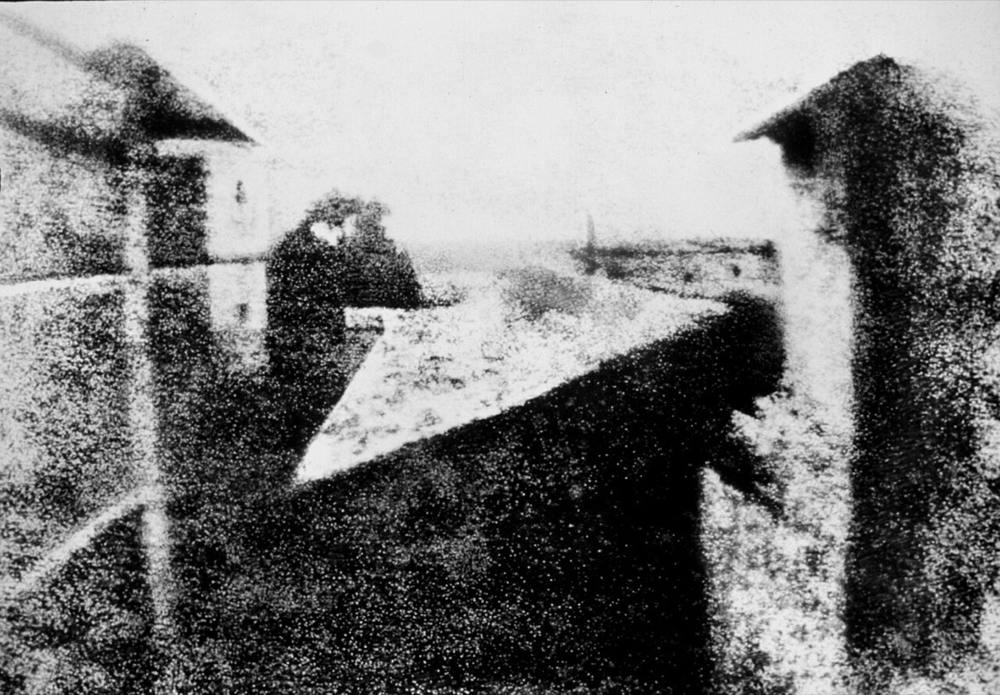
Приглядись к теням: свет падает на постройки с обеих сторон. Так не бывает — если только солнце не прошло за это время через полнеба. Выдержка длиной в день буквально видна внутри кадра.
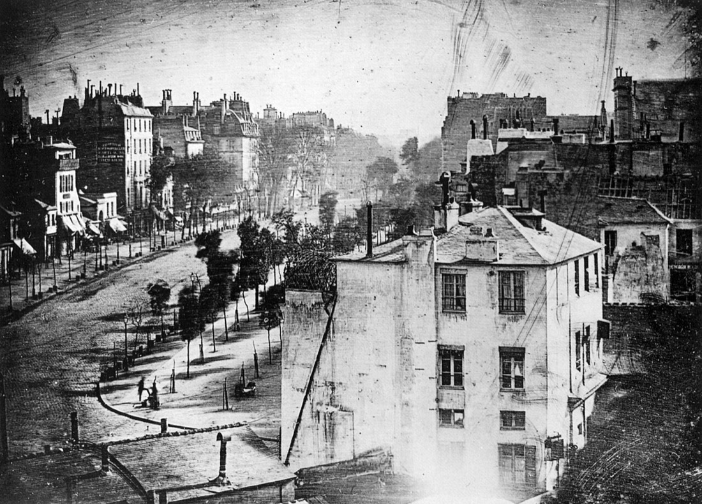
Это был один из самых людных бульваров Парижа — а мостовая пуста. Выдержка около десяти минут: экипажи и прохожие двигались и не оставили следа. Внизу слева стоят двое — чистильщик обуви и его клиент, единственные, кто задержался достаточно долго. Отсюда правило, которое стоит помнить и про современные снимки: фотография показывает не то, что было, а то, что было достаточно долго для выбранной выдержки.
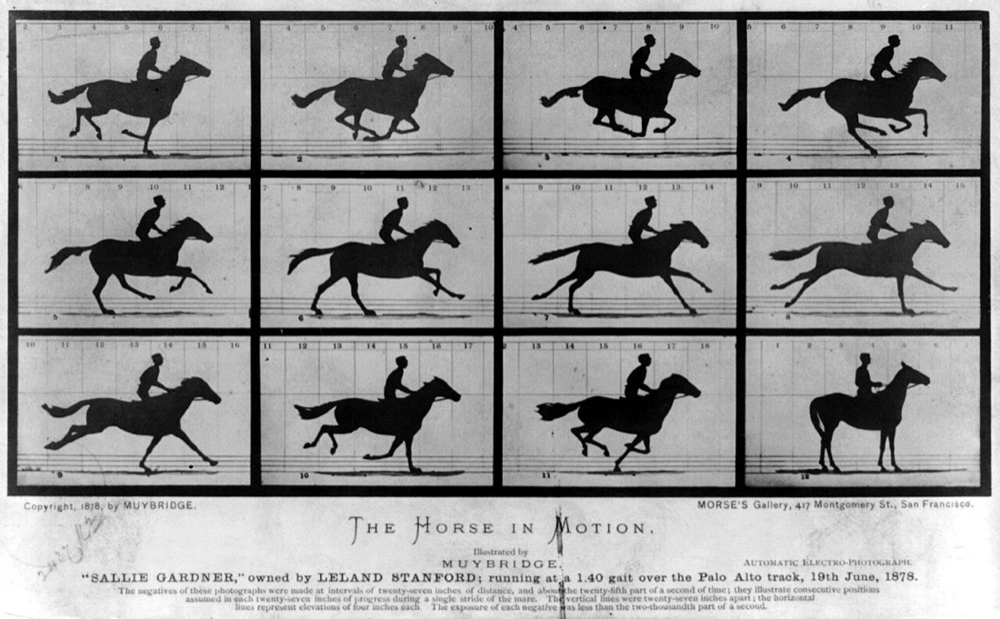
Заказчик, железнодорожный магнат Лиланд Стэнфорд, хотел выяснить спор: отрывается ли лошадь на галопе от земли всеми четырьмя ногами сразу. Глаз этого не различает, а художники веками рисовали «летящий галоп» — ноги вытянуты вперёд и назад, как у скачущей игрушки. Мейбридж показал, что момент без опоры есть, но выглядит иначе: ноги в этот миг подобраны под корпус. Фотография впервые выступила арбитром там, где зрение бессильно, — и заодно, разложив движение на кадры, подсказала дорогу к кино.
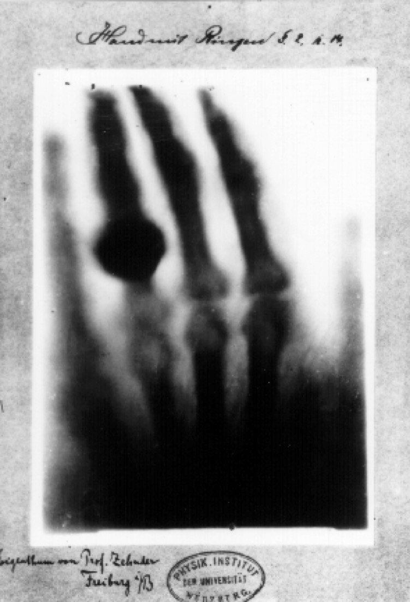
Тёмное пятно — обручальное кольцо. Увидев снимок, жена Рёнтгена сказала: «Я увидела свою смерть». Здесь фотография делает следующий шаг: она показывает не то, что глаз не успел, а то, чего глаз не может увидеть в принципе. С этого начинается вся визуализация невидимого — от медицины до снимка чёрной дыры в конце урока.
Форма: почему кадр читается мгновенно
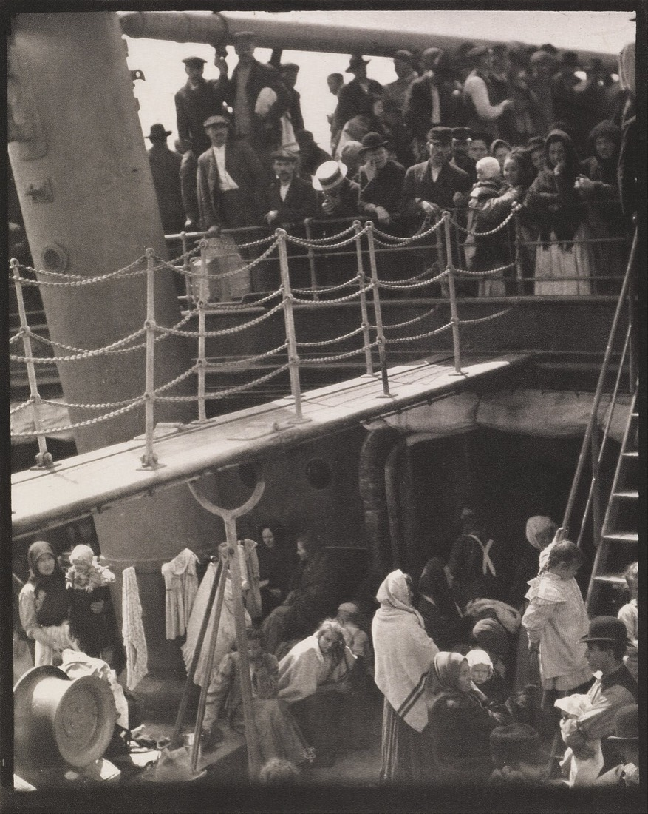
Штиглиц плыл первым классом, вышел пройтись и увидел это сверху. Сам он описывал увиденное не как сцену с людьми, а как картину форм: сходни рассекают кадр по диагонали, круглая соломенная шляпа держит верхний ярус, дымовая труба и мачта задают вертикали, лестница справа отвечает диагонали сходен. Смысл — два мира, верхний и нижний, разделённые доской, — читается за долю секунды, ещё до того, как разглядишь лица.
Это и есть работа формы. Анри Картье-Брессон позже назвал решающим моментом то мгновение, когда содержание и геометрия кадра совпадают: чуть раньше или чуть позже — и линии рассыпаются. Отсюда же привычка снимать сериями: решающий момент не выбирают заранее, его вылавливают.
Свидетельство, которое меняет законы
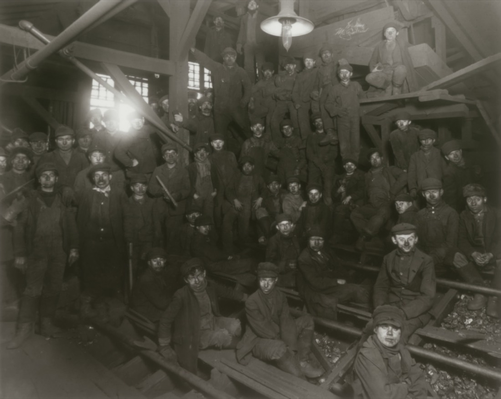
На фабрики Хайна не пускали, и он приходил под видом продавца Библий, страхового агента или заводского фотографа. Рост детей он измерял тайком — по пуговицам собственного пальто, чтобы потом указать возраст точно. Его снимки годами возили по стране с лекциями, и они стали одним из главных аргументов в пользу законов, ограничивших детский труд. Это чистый случай, когда фотография сработала как политический инструмент.
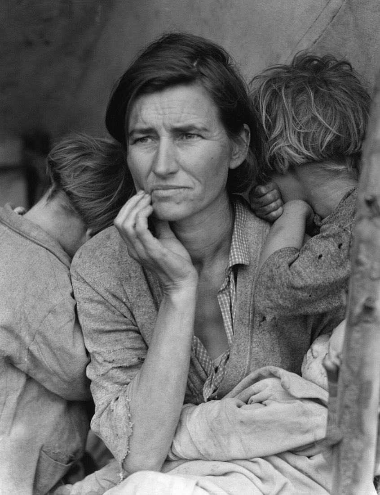
Самый известный кадр Великой депрессии — и почти каждая деталь его истории поучительна.
- Это не единственный кадр, а последний из шести: Ланг подходила ближе, дети разворачивались, композиция собиралась постепенно. Знаменитым стал тот, где лицо крупно и оба старших ребёнка отвернулись.
- Съёмка была государственным заказом: правительству нужны были снимки, доказывающие, что помощь переселенцам необходима. Великий кадр и заказная работа — не противоположности.
- С негатива отретушировали большой палец, лежавший на шесте у нижнего края: он «мешал».
- Женщину звали Флоренс Оуэнс Томпсон, её опознали только в 1978 году. Всю жизнь она считала, что снимок принёс славу фотографу и ничего — ей; имени у неё никто тогда не спросил.
Отсюда важное: у знаменитой фотографии почти всегда есть заказчик и есть человек в кадре, которого не спрашивали. Это не отменяет силы снимка, но входит в его честное описание.
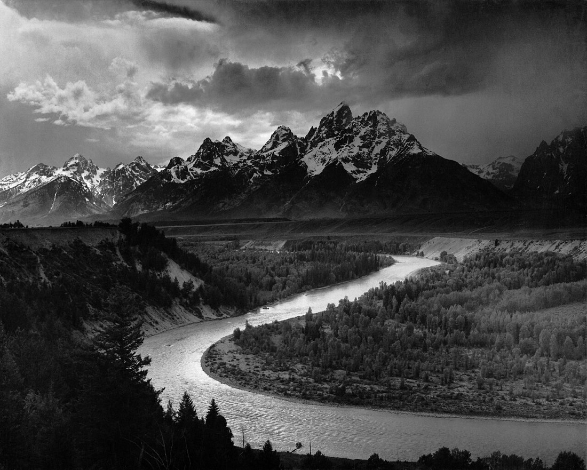
Противоположный полюс: здесь нет ни события, ни человека. Адамс разработал зонную систему — способ заранее решить, какая яркость в природе станет каким оттенком серого на отпечатке, и подобрать под это экспозицию и проявку. Кадр не поймали, а рассчитали. Через тридцать пять лет эта фотография улетела с «Вояджерами» на золотой пластинке — как один из образов Земли для тех, кто её найдёт.
Постановка, ретушь и доверие
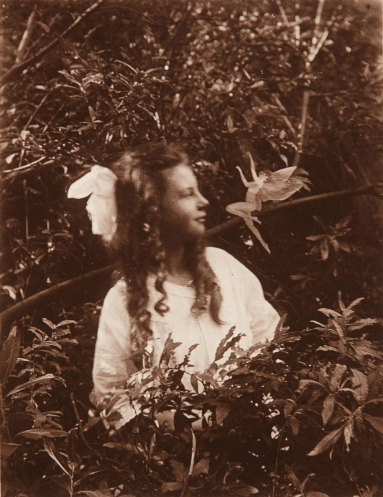
Две девочки, шестнадцати и девяти лет, вырезали фей из детской книжки, закрепили шпильками в траве и сфотографировались. В подлинность снимков поверил Артур Конан Дойл и опубликовал их в журнале The Strand как доказательство существования фей. Признались авторы только в 1983 году.
Смешно это ровно до момента, пока не вспомнишь причину: в 1920 году у публики ещё не было навыка не верить фотографии. Технология была новой, а свидетельство — физическим. Сегодня этот навык есть у всех, и всё же список знаменитых кадров, вокруг которых идёт спор о постановке, длинный, — а генеративные модели вернули вопрос в исходную точку, только теперь «это было» перестало следовать из самого факта существования снимка.
Полезно держать в голове три разные вещи, которые часто валят в одну кучу:
| Что сделано | Пример | Меняет ли смысл |
|---|---|---|
| Кадр выбран из серии | «Мать-переселенка» | нет, это обычная работа |
| Сцена организована | рекламные съёмки, парадные портреты | нет, если это не выдают за репортаж |
| Кадр обрезан или отретуширован так, что меняется событие | убрать соседа, поменять контекст | да, это подлог |
Взгляд наружу: как фотография поменяла масштаб
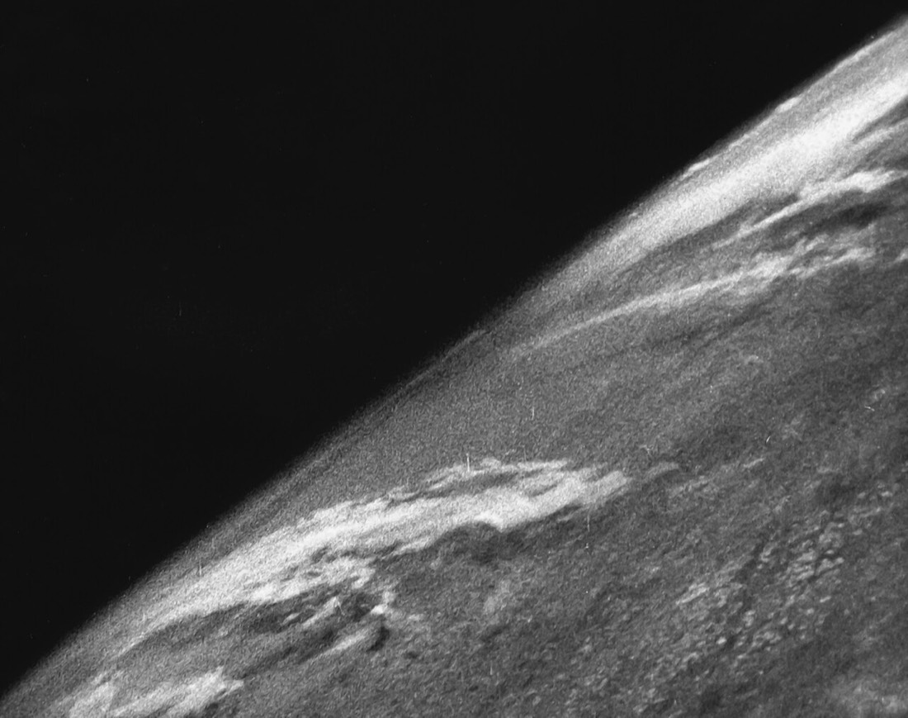
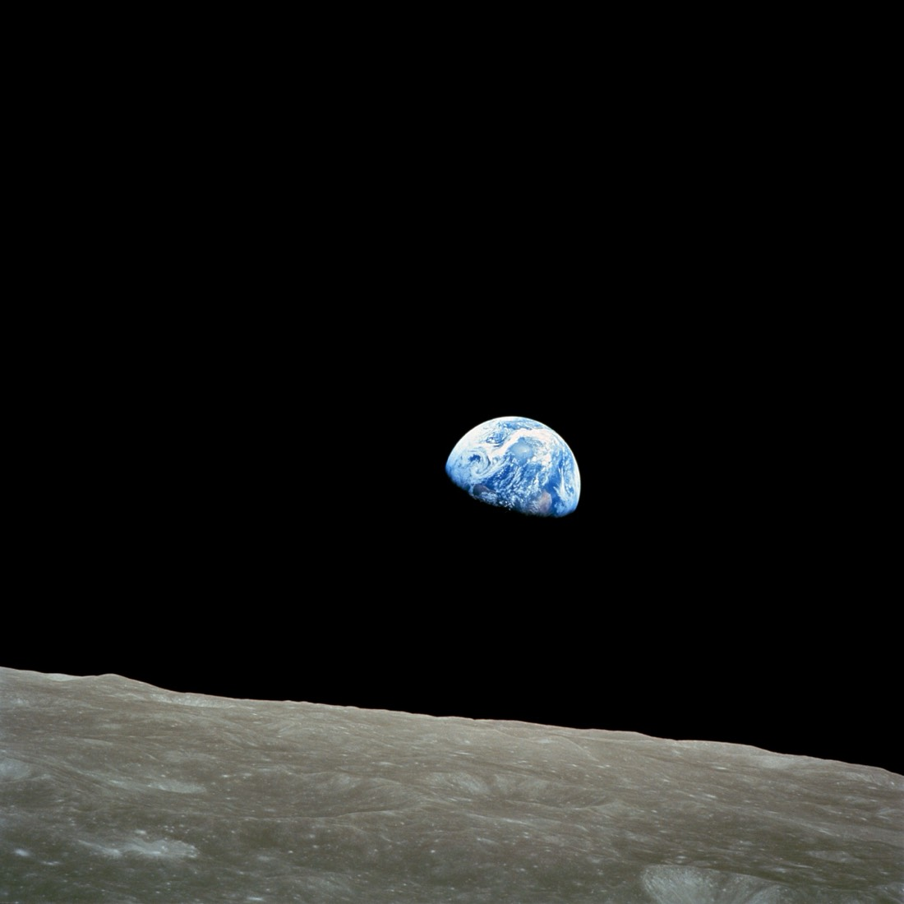
Про «Восход Земли» участники экспедиции сказали лучше всех: мы летели изучать Луну, а открыли Землю. Снимок разошёлся по всему миру и считается одной из причин, по которым экологическое движение конца шестидесятых так быстро набрало силу: планету впервые увидели целиком, маленькой и без единой границы.
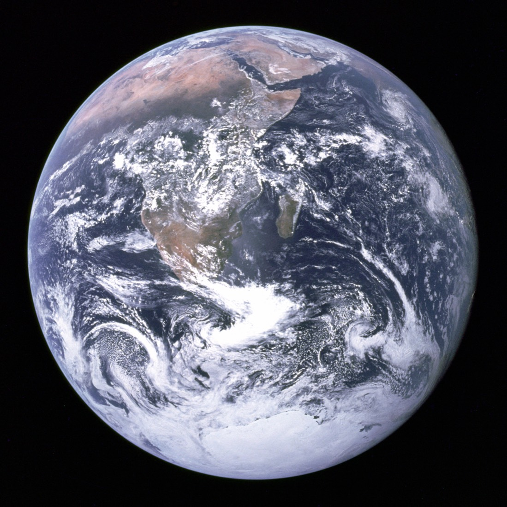
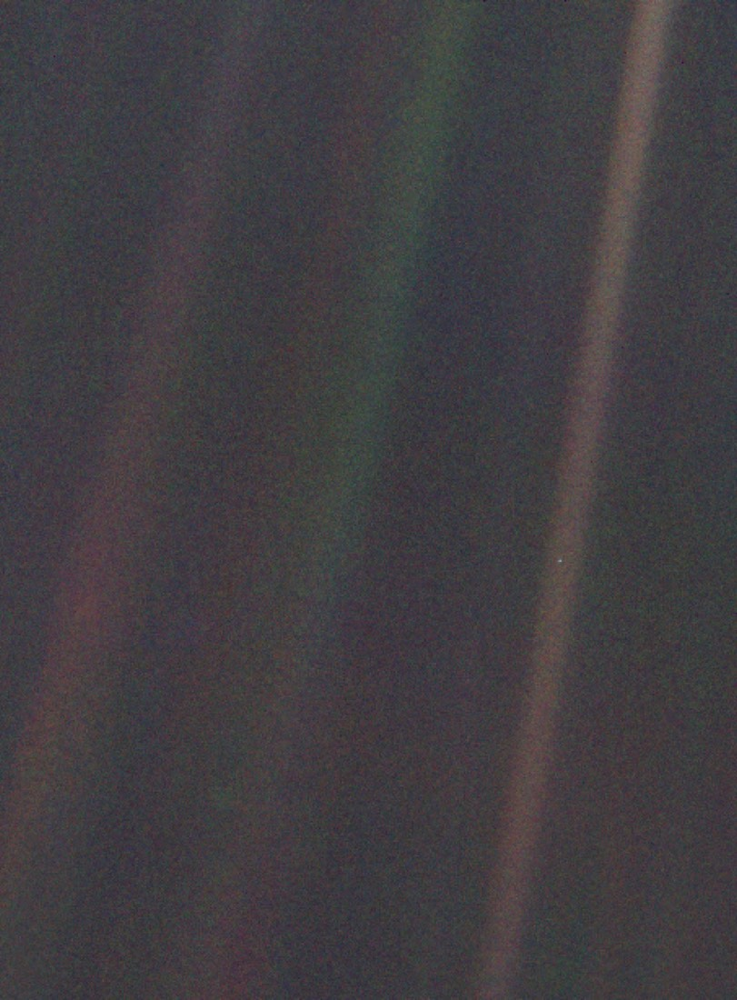
«Вояджер-1» развернули на прощальный снимок по настоянию Карла Сагана: научной ценности в кадре не было никакой. Земля занимает здесь около одной десятой пикселя. Полосы света — не лучи, а блики от Солнца внутри объектива, то есть дефект съёмки; точка просто случайно попала в один из них. Кадр, у которого вся сила в подписи и в масштабе, — редкий и честный случай.
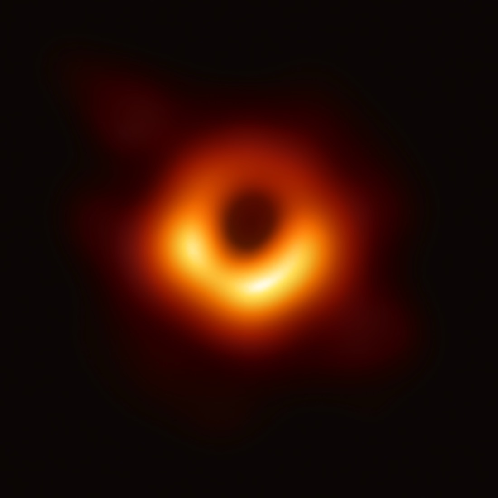
А это уже не фотография в прежнем смысле. Восемь радиотелескопов от Гавайев до Южного полюса наблюдали объект одновременно и работали как одна антенна размером с Землю. Данных набралось столько, что диски с записями физически везли самолётами — по сети это отправлять было бы дольше. Изображение не отпечаталось на носителе, а было восстановлено вычислением из разрозненных измерений.
Цепочка урока на этом замыкается: от пластины, на которой солнце само рисовало двор за восемь часов, до картинки, которую собрал алгоритм. Свидетельство никуда не делось, но теперь оно опирается не на физику отпечатка, а на доверие к методу и к тем, кто его применял.
Кадры, которых здесь нет
Половина самых знаменитых фотографий XX века защищена авторским правом — их держат агентства, и просто так положить их в свою страницу нельзя. Ниже — те, что стоит посмотреть отдельно; заодно это хорошая иллюстрация к тому, что у любого снимка есть правообладатель.
- Водружение флага над Иводзимой — Джо Розенталь, 1945. Флаг был вторым за день, и снимок годами обвиняли в постановке, хотя он ею не был.
- Обед на небоскрёбе — 1932. Одиннадцать рабочих на балке над Манхэттеном: рекламная съёмка Рокфеллеровского центра, автор достоверно не установлен.
- «Смерть ополченца» — Роберт Капа, 1936. Самый долгий спор о постановке в истории репортажа.
- «Ужас войны» — Ник Ут, 1972. Девочка, бегущая после напалмового удара; снимок изменил отношение американцев к войне во Вьетнаме, а фотограф отвёз её в больницу.
- «Афганская девочка» — Стив Маккарри, 1984. Портрет из лагеря беженцев; героиню нашли через семнадцать лет.
- «Неизвестный бунтарь» — Джефф Уайденер, 1989. Человек перед колонной танков на площади Тяньаньмэнь.
- «Стервятник и девочка» — Кевин Картер, 1993. Пулитцеровская премия и шквал вопросов «почему он снимал, а не помог»; через несколько месяцев Картер покончил с собой.
- «Падающий человек» — Ричард Дрю, 2001. Опубликован один раз и почти отовсюду изъят: газеты сочли его невыносимым.
- Анри Картье-Брессон — автор понятия «решающий момент»; смотреть подряд что угодно.
Как смотреть на фотографию
Шесть вопросов, которые превращают разглядывание в чтение. Первые три — про сам кадр, вторые три — про то, как он попал к тебе.
- Что за границей кадра? Рамка — главный инструмент фотографа: он не столько показывает, сколько решает, чего ты не увидишь.
- Где стоял автор? Точка съёмки выдаёт его положение в ситуации: сверху и в стороне, как Штиглиц; в толпе; рядом с теми, кто пустил его внутрь.
- Что держит композицию? Найди диагональ, ярусы или пятно, к которому возвращается взгляд, — обычно именно они, а не сюжет, делают кадр запоминающимся.
- Это один кадр или один из серии? У знаменитых снимков почти всегда есть соседние, и на них та же сцена выглядит спокойнее.
- Кто заказчик и зачем это публиковали? Государственная программа, агентство, рекламный отдел — у кадра есть путь до печати, и он на смысл влияет.
- Кто человек в кадре и знал ли он о съёмке? Самый неудобный вопрос и самый частый источник поздних скандалов.